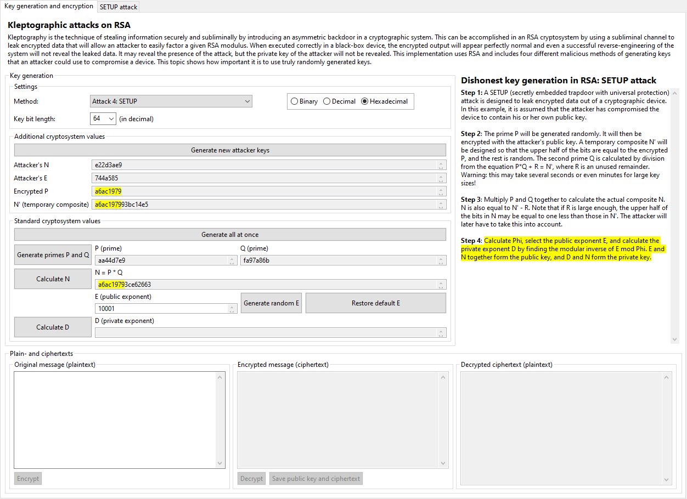
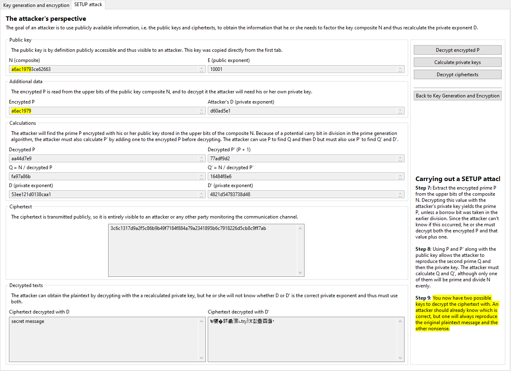

The secretly embedded trapdoor with universal protection (SETUP) attack is by far the most complicated attack presented here, but also the most "secure" (from the attacker's perspective). It is described in Section 11.5 of [YY04], although this plug-in features an altered version of the attack. Although the attack as originally designed would not be particularly more difficult to implement, the version here has been simplified to make it easier to understand.
The core idea is that the attacker stores his or her own public key in the cryptographic device, which is used to encrypt the honestly generated prime P. The composite N is then designed to contain this encrypted value but still factor into P and Q. The attacker then only needs to find the correct part of the publicly transmitted N and decrypt it with his or her own private key to find P. From there it is trivial for the attacker to reproduce the corresponding private key.
The "security" of this system is highly robust. In an ideal implementation, the generated values will appear entirely random, and if the system is designed correctly, the processing time will not be suspiciously greater than that of an honest device. Even if a reverse-engineer was able to successfully investigate the device, he or she would only find the attacker's public key. With that knowledge, the engineer gains nothing, since the private key is still private. For all observers and even the reverse-engineer, the device is still entirely secure, with the single exception that the possessor of the private key (i.e., the attacker) has complete knowledge of all generated key pairs. Discovering the attack only compromises the device with respect to the individual attacker: otherwise, it is still completely secure.
In this implementation, the attacker creates a public key of the same length as the prime P, that is, half the length of the keys produced by the device. Since the attacker's primes must be half of that length, the key bit length must be divisible by four. Furthermore, the key length of N must be at least 20 bits to provide a large enough space to create effective keys. P is generated honestly (randomly) and encrypted with the attacker's public key. A temporary composite N' is created so that the upper half of the bits are equal to the encrypted P and the rest is random. The second prime Q is calculated by dividing N' by P and ignoring the remainder R, such that (P * Q) + R = N'. The actual composite N is then calculated normally such that P * Q = N = N' - R. However, not every N' will divide by P to generate a valid Q, so this sequence must usually be repeated many times before a suitable pair is found, which means that this process can be extremely slow. Also, due to the complicated nature of this process, you cannot provide your own primes.
An ideal implementation would function much faster but require a even more complicated process, especially on the part of the attacker. Also note that if R is large enough, the upper half of the bits in N may be equal to one less than those in N' due to a bit carry.
Once P, Q, and N have been generated, the remaining steps are identical to those of honest key generation. The attacker needs only to decrypt the upper half of the bits of N (or that value plus one in the case of a bit carry) with his or her private key to obtain the prime P, and from there, obtaining the corresponding private key is trivial.
The user interface for this attack is a bit more complicated. The first step is to generate the attacker's keys. The attacker's public key (N,E) is stored in the device and thus displayed here. When you generate the primes, the encrypted P and the temporary composite N' are also displayed. When N is calculated, if you selected to view the display in binary or hexadecimal, the encrypted P as well as the upper half of the bits of N' and N will all be highlighted, since they will be identical (unless the upper half of N is one bit less).
Generation of E and D, and encryption and decryption of a message, proceed normally just as in honest key generation. However, after encrypting a message (regardless of whether you have simulated the intended receiver and decrypted it), you can play the role of the attacker by clicking the "Save public key and ciphertext" button. Unlike the fixed P attack, you only need to save one public key and ciphertext to carry out the attack. This button will automatically bring you to the "SETUP attack" tab:

The saved public key and the ciphertext have already been copied over, and the upper half of the bits of the composite N have been parsed out, since we know they are the encrypted P. The attacker's private key is also displayed. When decrypting P, the attacker does not know if a bit carry occurred in the key generation process, so he or she must decrypt both the encrypted P and that value plus 1. The attacker can then reproduce the two corresponding possible private keys and try to use both to decrypt the ciphertext. It should be fairly obvious which of the revealed plaintexts is the correct one.
Click here to return to the kleptography index.
[YY04] A. Young, M. Yung, Malicious Cryptography: Exposing Cryptovirology, John Wiley & Sons, 2004.